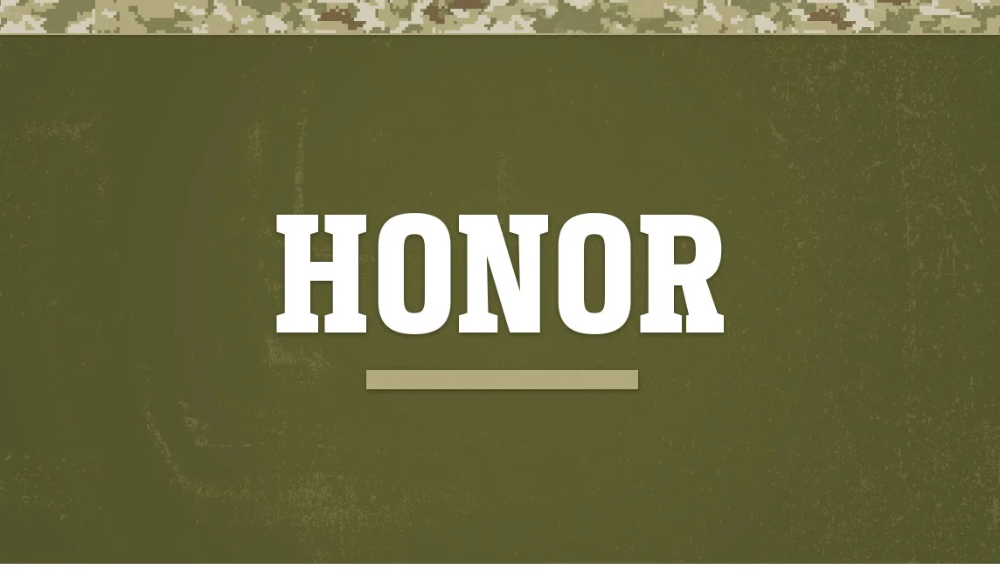
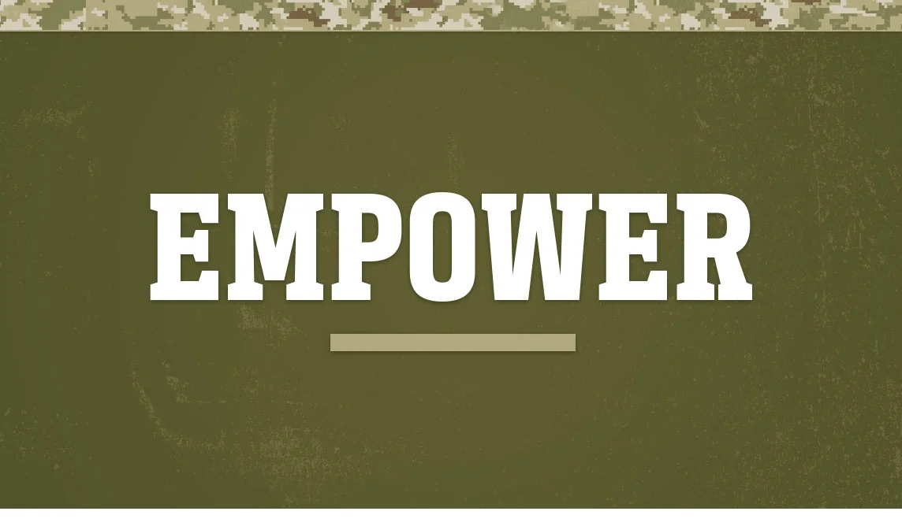
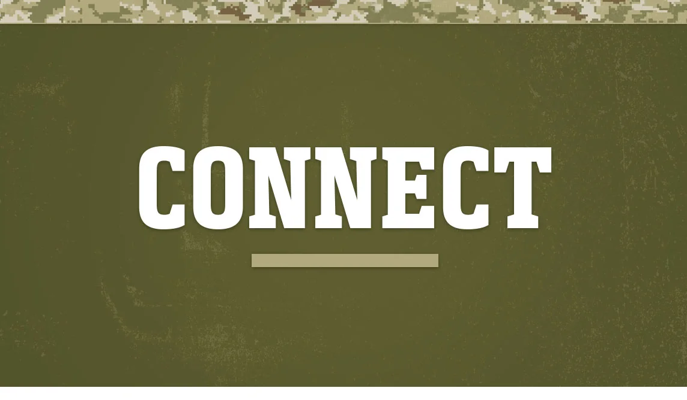

La NFL muestra su gratitud por el servicio y sacrificio de nuestro ejército a través de asociaciones, subvenciones y reconocimiento de hombres y mujeres en servicio.

Al asociarse con organizaciones que apoyan a los miembros del servicio, los veteranos y sus familias, la NFL utiliza su plataforma y sus recursos para crear un impacto positivo para los héroes de nuestra nación.

La NFL une a los miembros del servicio y sus familias a través de su amor compartido por el fútbol y brinda oportunidades para que aquellos que prestan servicios se conecten entre sí.